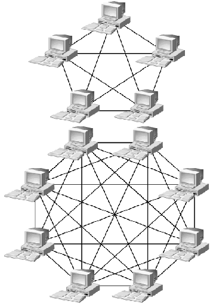

Комп’ютерні мережі - це сукупність апаратно-програмних засобів, об'єднаних за допомогою каналів зв'язку для швидкого обміну даними, спільного використання ресурсів та централізованого керуванняінформаційними потоками
Класифікація комп’ютерних мереж
є багатокритеріальною і базується на кількох ключових
ознаках, де фундаментальним є географічний масштаб,
що розподіляє мережі на локальні (LAN) для обмежених територій типу
офісу чи дому,
міські (MAN) для інтеграції
інфраструктури в межах мегаполісу та глобальні (WAN), які забезпечують
міжконтинентальний зв'язок об'єднують мільярди
пристроїв

За архітектурною логікою та
способом взаємодії вузлів системи поділяють на однорангові (P2P),
де всі машини мають рівні права, та ієрархічні (клієнт-
серверні) з чітко виділеними керуючими серверами. За типом фізичного
середовища передачі інформації
виокремлюють проводові на основі крученої пари чи волоконно-оптичних
ліній
та безпроводові мережі(наприклад, Wi-Fi,
супутниковий та мобільний зв'язок).